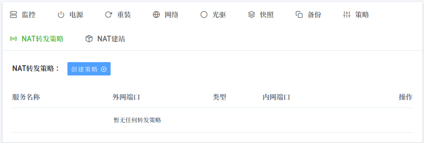
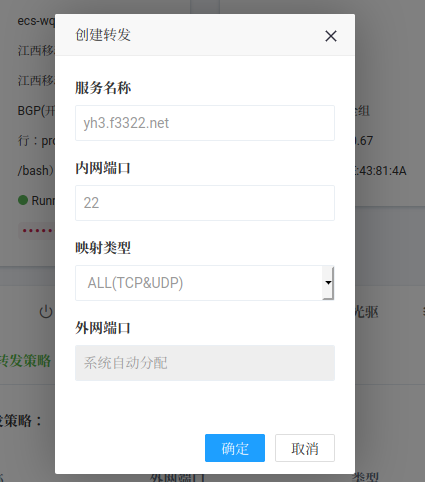
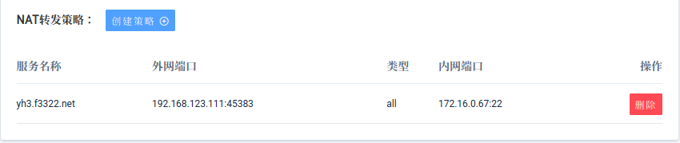
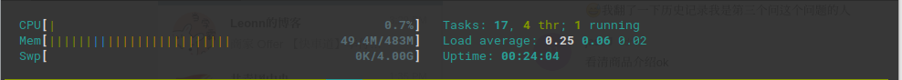
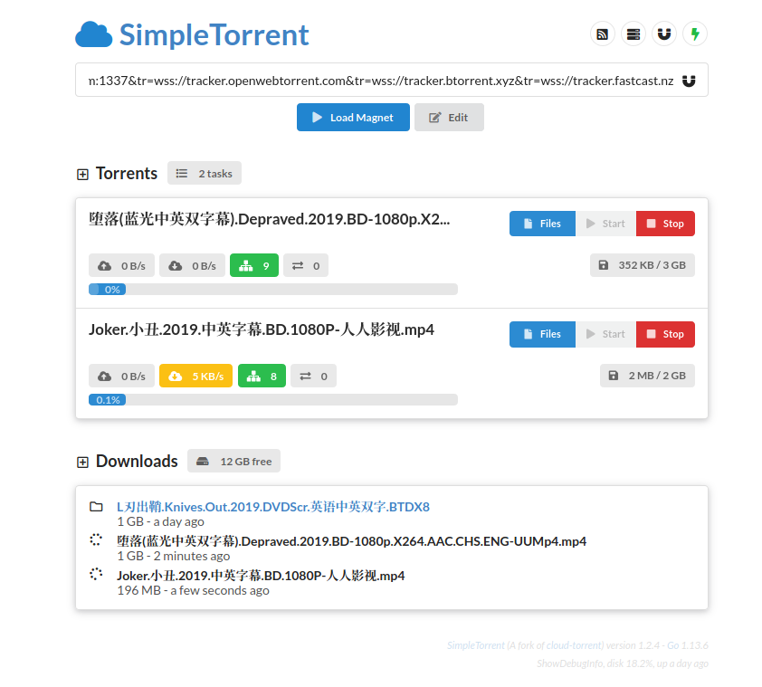

买了一台国内的Nat，共享ip，KVM，500G流量。不要抱太大希望，不要奢望太多，买一个月来当个玩具再好不过。这是第一次买国内的Nat,买了发现找不到ssh连接的端口，它不是购买后直接告诉你可以用的端口的那种，邮件说DDNS登录,给了域名和密码。想要 SSH ,它还需要你通过面板手动添加端口进行外部映射。
SSH登录
点击 NAT转发策略 > 创建策略

服务名称 随便填，内网端口 22, 第一次必须是22

确定 之后, 几秒后就自动刷新出来了，记下 外网端口，我这里是45383

现在可以ssh登录了ssh root@domin.com -p 45383 , domin.com 、密码邮箱里有。
查看一下资源占用

安装上大佬新写的电影下载工具 simple-torrent 来下载一个电影, That’s good!

流量中转
我这里使用的是 Debain 10 ,以中转 Wireguard 流量为例, v2ray 也是类似的操作，如果安装了 V2面板 的话，可以直接在那里设置转发。这里记录一下传统的方法。
vi /etc/sysctl.conf 取消 net.ipv4.forward = 1 注释, 运行 sysctl -p 生效
确定被中转主机A和中转机B的IP及端口
这里假设A 192.168.123.67:8081（Wireguard客户端 Endpoint ip:port）
假设B(Nat) 172.16.0.60：10000（内网ip，内网端口）设置iptables，执行以下命令
iptables -t nat -A PREROUTING -p tcp --dport 10000 -j DNAT --to-destination 192.168.123.67:1081
iptables -t nat -A PREROUTING -p udp --dport 10000 -j DNAT --to-destination 192.168.123.67:1081
iptables -t nat -A POSTROUTING -p tcp -d 192.168.123.67 --dport 1081 -j SNAT --to-source 172.16.0.60
iptables -t nat -A POSTROUTING -p udp -d 192.168.123.67 --dport 1081 -j SNAT --to-source 172.16.0.60
# 保存规则
mkdir /etc/iptables && touch /etc/iptables/rules
iptables-save > /etc/iptables/rules
# 重启后载入规则
iptables-restore < /etc/iptables/rules添加内网端口10000，得到外部端口b
更改 Wireguard 客户端配置文件, 修改Endpoint 192.168.123.67:8081 为 domin.com:b
大功告成！